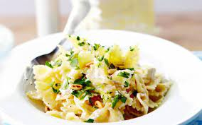

Pasta Gremolatta

Ingriediënten
- 500 g farfalle
- 1 el pijnboompitten
- 1 teentje knoflook
- 1 citroenschil
- 250 ricotta
- Handje bladpeterselie
Bereiding
- Kook de pasta beetgaar in een ruime hoeveelheid gezouten water.
- Snipper de peterselie en de knoflook. Vermeng ze met de geraspte citroenschil.
- Schep de ricotta door de warme pasta en verdeel over de borden. Bestrooi met de gremolata en werk af met de pijnboompitten.